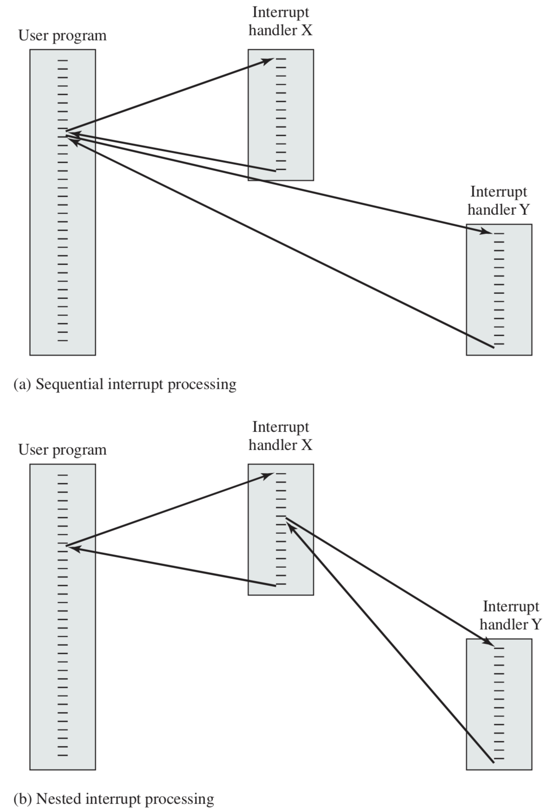
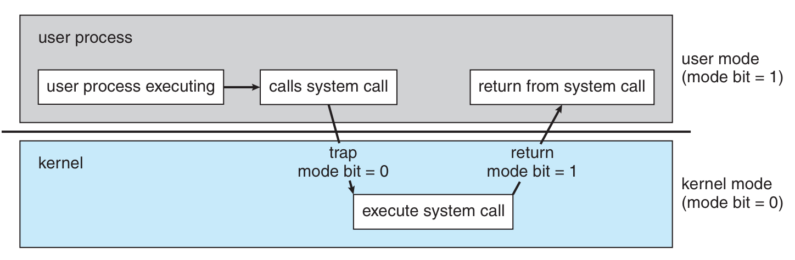

*Computer Organization Although a regular program like a word processor need not be concerned with the underlying hardware of the computer, this abstraction does not come for free: the operating system must be aware of these details and manage them for everyone. What is a program, anyway? You will know from your programming experience that a program is just a sequence of instructions and some data. Thus, to execute a program, we will need a few things:
Main Memory – a place where the instructions and data are stored;
System Bus – a way for instructions and data to travel between memory and the processor; and
Processor – that critical element of the system that actually executes the instructions.
For our purposes we are really only interested in talking about the processor, because it matters in the context of interrupts, which is our real goal.
The Processor (or CPU, central processing unit) is the brain of the computer. It fetches instructions from memory, via the bus, decodes the instruction, then executes it. This fetch-decode-execute cycle will be repeated until the program finishes (... if the program finishes). The different steps may be executed in parallel: while one instruction is being executed, the next is being decoded, and the one after that is being fetched. We call this a pipeline, and the length and complexity of the pipeline is something we will not examine here, but is an interesting subject all its own. A processor’s largest unit on which it operates is called a word. A 32-bit processor has a word size of 32 bits and a 64-bit processor has a word size of 64 bits.
CPU instructions are, obviously, specific to the processor. If you have any experience in writing assembly code, you have probably used some books that tell you all the instructions that can be issued and what operands, if any, those instructions take. In some CPU architectures, some operations are available only in “supervisor mode” and not in “user mode”. An instruction that disables interrupts is an example of an instruction that would be available only in supervisor mode. Attempting to run it in user mode will be an error.
In addition to the hardware to decode and execute the different instructions, the CPU has some storage locations called registers. They may store data or instructions (they are both, after all, just a bunch of bits). Registers are a key concept in CPUs and management of those registers is partly the responsibility of the operating system. Registers are used to hold key variables and temporary results. Registers are often, but not always, word-sized.
The CPU frequently needs data to continue its operations, but it can take a variable amount of time to get it, depending on where it’s coming from. An analogy to put it in perspective: imagine I am the CPU and a particular book is the piece of data needed. If the data is in the cache, it is as if the book is on a bookshelf in my office. Thus, I can retrieve the book very quickly. If the data for the CPU on a magnetic hard disk, it is as if I would have to get the book from Library and Archives Canada in Ottawa (about 550 km away, according to Google Maps). And I would have to walk. Of course, the analogy is slightly tortured because the CPU doesn’t go get the data; instead it must wait for it to arrive. If I ordered a book from Library and Archives Canada and someone had to walk it over, I would spend a lot of time waiting. What might I do in the meantime...?
It seems logical that I should do something else. There are two options for dealing with this situation. One is polling: that I can check periodically if the book has arrived. This approach is fairly wasteful (how often do I check? How much time will I spend checking?). The other solution is that I can receive a notification when the poor fellow who has walked the 550 km to my office has arrived. If he knocks on my office door, it will cause me to suspend what I am doing and collect the book. Or, to put it in one word: interrupts.
In that analogy I played the part of the CPU, and was interrupted and had to deal with that interruption. We have the same in computer systems. When an interrupt happens, the normal sequencing of the processor does not continue. Interrupts can come from many sources :
Program: Something happens in the program (e.g., a division by zero).
Timer: A configured timer within the processor’s time expires (e.g., to update the system clock).
Input/Output: An I/O controller signals (un)successful completion of an operation (e.g., read from disk).
Hardware Failure: Something happens in hardware (e.g., power failure).
Interrupts are primarily a way to improve processor utilization (i.e., the fraction of the time the CPU is doing useful work). CPU time is valuable and the CPU can and should do something else while it is awaiting the results of some other operation. Thus, the CPU might issue a read from memory instruction, work on something else, and then be interrupted when the data has arrived from memory.
When an interrupt takes place, the processor might choose to ignore it, but this is rare. Interruptions usually contain important information. Almost always, we will want to handle (deal with) the interrupt in some way.
Consider an analogy with which you are surely familiar: a professor is at the front of the lecture hall droning on about some subject. A student raises her hand to ask a question. The professor can ignore this, but that is generally a bad idea. The professor should pause what he is doing (pause execution), remembering where he was (save state), take the question and answer it (handle the interrupt), and then resume from where he left off (restore the saved state and continue execution).
The operating system is responsible for storing the state of the program being interrupted, handling the interrupt, and then restoring the state of the program that was interrupted.
Sometimes the CPU is in the middle of something where an interruption would be bad. Thus, interrupts can be disabled. This is like the professor saying that all questions should be saved until the end of the lecture. Once interrupts are enabled again, the interruptions can be handled. So all the questions that students have saved can be answered. Interrupts tend to have a priority, so if multiple interrupts are pending, the highest priority one will be dealt with first.
There can also be multiple interrupts happening in a short period of time: suppose interrupt 1 occurs and then interrupt 2 occurs while interrupt 1 is still being handled. Often, but not always, interrupt handlers themselves disable interrupts so a subsequent interrupt will be handled after the current one is dealt with. Or, interrupt 2 may itself interrupt the first. Consider the diagrams below:

Top: Sequential interrupt handling. Bottom: Nested interrupt handling.
A combination of these different techniques may be used. A low priority interrupt handler may be suspended to deal with a high priority interrupt. Suppose while the high priority interrupt is being handled, a medium priority interrupt occurs. The high priority interrupt handler will be allowed to complete its work before the medium priority interrupt is dealt with.
We mentioned already that the operating system is responsible for storing the state of the program (or interrupt handler) being interrupted when an interrupt occurs. To do so, the state of the CPU is what must be stored. The values of the various registers (e.g., program counter, instruction register, etc.) are stored by pushing them onto the stack. When the interrupt is finished, those values are popped off the stack and loaded into the registers again. After that, program execution continues (almost) as if the interruption never took place.
Thus far we have assumed that there is a program running and that same program is the one that resumes at the end of the interrupt handling. This is, however, not always the case. Given that we have stored the state of the interrupted program, the OS can resume it any time we like, and run a different program now instead. But which program should run next? This is a matter of scheduling and from our view in application programming, out of our control (mostly but not entirely).
Operating systems run, as previously discussed, on interrupts. In addition to the interrupts that will be generated by hardware and devices (e.g., a keyboard signalling that the F1 key has been pressed), there are also interrupts generated in software. These are often referred to as a trap (or, sometimes, an exception). The trap is usually generated either by an error like an invalid instruction or from a user program request.
If it is simply an error the operating system will decide how to deal with it, and in desktop/laptop OSes, the usual strategy is sending the exception to the program that caused it, and this is usually fatal to the offending program. Your programming experience will tell you that you can sometimes deal with an exception (perhaps through the language equivalent of the Java/C# try-catch-finally syntax), but often an exception is unhandled and terminates the program.
The more interesting case is the intentional use of the trap: this is how a user program gets the operating system’s attention. When a user program is running, the operating system is not; we might even say it is “sleeping”. If the program running needs the operating system to do something, it needs to wake up the OS: interrupt its sleep. When the trap occurs, the interrupt handler (part of the OS) is going to run to deal with the request.
Already we saw the concept of user mode vs. supervisor mode instructions: some instructions are not available in user mode. Supervisor mode, also called kernel mode, allows all instructions and operations. Even something seemingly simple like reading from disk or writing to console output requires privileged instructions. These are common operations, but they involve the operating system every time.
Modern processors keep track of what mode they are in with the mode bit. This was not the case for some older processors and some current processors have more than two modes, but we will restrict ourselves to dual-mode operation with a mode bit. Thus we can see at a glance which mode the system is in. At boot up, the computer starts up in kernel mode as the operating system is started and loaded. User programs are always started in user mode. When a trap or interrupt occurs, and the operating system takes over, the mode bit is set to kernel mode; when it is finished the system goes back to user mode before the user program resumes .
Suppose a text editor wants to output data to a printer. Management of I/O devices like printers is the job of the OS, so to send the data, the text editor must ask the OS to step in, as in the diagram below:

Transition from user to supervisor (kernel) mode .
So to print out the data, the program will prepare the data for printing. Then it calls the system call. You may think of this as being just like a normal function call, except it involves the operating system. This triggers the operating system (with a trap). The operating system responds and executes the system call and dispatches that data to the printer. When this job is done, operation goes back to user mode and the program returns from the system call.
Why do we have user and supervisor modes, anyway? As Uncle Ben told Spiderman, “with great power comes great responsibility”. Many of the reasons are the same as why we have user accounts and administrator accounts: we want to protect the system and its integrity against errant and malicious users.
An example: multiple programs might be trying to use the same I/O device at once. If Program 1 tries to read from disk, it will take time for that request to be serviced. During that time, if Program 2 wants to read from the same disk, the operating system will force Program 2 to wait its turn. Without the OS to enforce this, it would be up to the author(s) of Program 2 to check if the disk is currently in use and to wait patiently for it to become available. That may work if everybody plays nicely, but without someone to enforce the rules, sooner or later there will be a program that does something nasty, like cancel another program’s read request and perform its read first.
This doesn’t come for free, of course: there is a definite performance trade-off. Switching from user mode to kernel mode requires some instructions and some time. It would be faster if everything ran in kernel mode because we would spend no time switching. Despite this, the performance hit for the mode switch is judged worthwhile for the security and integrity benefits it provides.
Let us examine in some more detail what is actually happening in a
system call. This example is from and will use C code to
perform a read on a UNIX system. The specification says the function
read takes three parameters: (1) the file (a file
descriptor, from a previous call to open); (2) where to read
the data to; and (3) how many bytes to read. Here is an example:
(The read function returns the number of bytes successfully read; it is normally equal to numBytes but might be smaller if the end of the file is reached. Here we are storing it in a variable bytesRead.)
In preparation for invocation of read the parameters are pushed on the stack. This is the normal way in which a procedure is called in C(++). Then the read procedure is called and this is just the normal instruction to enter another function. The read function will put its identifier (the system call number) in a predefined location (typically a register). Then it executes the trap instruction, activating the OS.
When the trap occurs, the OS takes over and control switches from user mode to kernel mode. Control transfers to a predefined memory location within the kernel (the trap handler). The trap handler then runs and examines the request: it checks the identifier that was put in the register earlier. Based on that, it knows what system call request handler should execute: the one to read from a file. That routine executes. When it is finished, control will be returned to the read function; we exit the kernel and return to user mode.
Back in user mode, the read call finishes and returns, and control goes back to the user program.
Let’s consider a more complex example. This uses some Linux specific items, but is a quick example of a program that reads a file and prints it out:
#include <stdio.h>
#include <stdlib.h>
#include <unistd.h>
#include <string.h>
#include <fcntl.h>
void readfile( int fd );
int main( int argc, char** argv ) {
if ( argc != 2 ) {
printf("Usage: %s <filename>\n", argv[0]);
return -1;
}
int fd = open( argv[1], O_RDONLY );
if ( fd == -1 ) {
printf("Unable to open file! %s is invalid name?\n", argv[1] );
return -1;
}
readfile( fd );
close( fd );
return 0;
}
void readfile( int fd ) {
int buf_size = 256;
char* buffer = malloc( buf_size );
while ( 1 ) {
memset( buffer, 0, buf_size );
int bytes_read = read( fd, buffer, buf_size - 1);
if ( bytes_read == 0 ) {
break;
}
printf("%s", buffer);
}
printf("\nEnd of File.\n");
free( buffer );
}To summarize, the steps, arranged chronologically, when invoking a system call are:
The user program pushes arguments onto the stack.
The user program invokes the system call.
The system call puts its identifier in the designated location.
The system call issues the trap instruction.
The OS responds to the interrupt and examines the identifier in the designated location.
The OS runs the system call handler that matches the identifier.
When the handler is finished, control exits the kernel and goes back to the system call (in user mode).
The system call returns control to the user program.